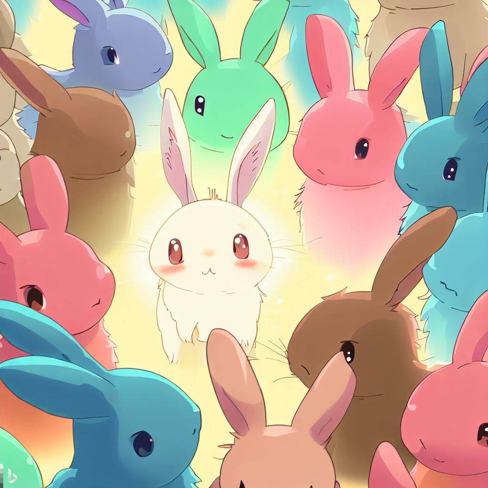

By Estéfano Vidal - May 10, 2023
What is exactly a genetic algorithm? Well, it is an algorithm inspired by the principles of natural selection. Sometimes problems are too big or just take a lot of time to develop a good enough solution. At that moment, genetic algorithms are applied. In other words, they are particularly useful in cases where the solution space is large and complex, and traditional optimization methods are not effective. Some notable cases are machine learning, robotics, game theory, and design optimization.
So, genetic algorithms are inspired by natural selection. If you're not familiar with this concept, I can explain it to you quickly.
Every living thing has traits that help them survive and reproduce. For example, a bird might have a long beak that helps it catch insects. If a bird with a long beak has more babies than a bird with a short beak, then the long beak trait will become more common in the bird population over time. The descendants of those birds with long beaks will be different from their siblings and their parents due to DNA recombination and mutation, which are really important concepts for understanding genetic algorithms. Some will have shorter beaks than their parents, and some will have longer beaks. As each new population has a higher proportion of birds with long beaks, we can say that the environment is "selecting" for the trait "long beak," and birds with long beaks are better suited to that environment. Eventually, the size of the beak in the general population might reach a point where an even longer beak is not beneficial for survival and reproduction. At that time, we can say that the size of the beak is a good enough solution for a particular problem defined by the environment.
Now that we understand the general concepts of evolution and natural selection, we can translate them into an algorithm.
First, we have a problem that needs a solution. In the case of the birds, the problem is set by the environment and might be something like reaching a bug inside a tree. But we can define our own problems. For example, how to visit a certain number of cities while traveling the shortest path without repeating any location. This is known as the Traveling Salesman Problem (TSP) and is a classic.
We could try each and every one of the possibilities, but that would take forever and would also try many obviously inefficient solutions. We can see that nature thinks the same. It doesn't try every beak size to find the "perfect" size. Nature tries a bunch of beaks, or possible solutions. Some work better than others, and each generation of birds is better suited to the problem. We can do the same by making a "population" of randomly generated paths. Some will work better than others and be "better suited". This "fitness" can be measured by a mathematical formula designed for the specific problem. That formula will be our "fitness function".
Now that we have selected the better solutions based on their score defined by our fitness function, we need to generate new solutions that can outperform our current ones. To do this, we can randomly mix the information contained within each unique solution between them. In the case of the TSP, it would be the order of the cities visited. This newly generated solution will contain part of the information carried by its "parent" solutions. However, we need to introduce new information as well. So, we will introduce a slight change to a solution by randomly altering its information. With these two methods, we are imitating DNA recombination and mutation, which are processes that drive natural selection and occur naturally. Nonetheless, we are not limited by nature's rules. What if a new solution could have more than three parents? What if death doesn't exist for the top 5% of the population? We can play around with these concepts and many more.
Ok, now that we grasp the general idea I can show you an example I've worked on. It's about creating magic squares, a magic square is a square grid filled with numbers in such a way that the sum of each row, column, and diagonal is the same,
simple concept to grasp, but is difficult for computers to find magic squares by traditional methods.
# optimization problem
#
# representation as an ordered integer list with no repetition (permutation)
#
# += 15 | += 34
# 2 | 7 | 6 += 15 | 1 | 14 | 4 | 15 +=34
# 9 | 5 | 1 += 15 | 8 | 11 | 5 | 10 +=34
# 4 | 3 | 8 += 15 | 13| 2 | 16| 3 +=34
# += += += += | 12| 7 | 9 | 6 +=34
# 15 15 15 15 | += += += += +=
# | 34 34 34 34 34
# |
#
# number of sums = (columns + rows + diagonals) = (2*n)+2
# magic number = n((n**2)+1)/2
On the left, we have a magic square of dimension 3, which is a 3x3 square. On the right side, there is a magic square of dimension 4. As you can see, the sum of the numbers is the same for each diagonal, row, and column. This particular problem consists of making a square matrix of randomly distributed consecutive numbers. The problem will be solved when a particular configuration of those numbers forms a magic square.
By defining those the problem and the solution we can start working on the code implementation of the genetic algorithm.
If you wish, you can see the code on this github repository .
The code is quite long, so I will describe its general functionality here.
Firstly, it initializes a population, and you can define the dimension of the squares and the size of the population. Next, the fitness function evaluates each individual square of the population. In this particular case, the fitness function works in the following way: the number of sums that need to be evaluated for each square is defined by this formula:
(2 * dimension of the square) + 2.
The result of that sum is called the magic number, and it's calculated using this formula:
dimension of the square * (dimension of the square ^ 2 + 1) / 2.
Let's assume we are working with a size 3 square, so the answer to that formula would be 8, because it will have 3 rows, 3 columns, and 2 diagonals. We will assume that the initial fitness score for this square is the maximum, which is 8. The fitness function will evaluate how many rows and columns reach the sum of the magic number (in this case, 15), and for each one, it will subtract 1 from the initial fitness score. In this particular case, the lower the fitness score, the better it is, with a perfect score being 0. This is completely arbitrary and could have been done the other way around.
Now that each individual has its own fitness score, we will select the better ones. The selection mechanism used in the code is called “Binary tournament” . It works by randomly selecting two individuals from the population and the one with the better fitness score is selected as a parent to produce offspring for the next generation. This process is repeated until the desired number of parents is selected. The name "binary" refers to the fact that two individuals are compared at a time in each round of selection.
Now that we have selected the parents, it's time to reproduce them. This is done by a "crossover operator." There are many known crossover operators, some more specialized than others for specific kinds of problems. The one I implemented here is called Partially-Mapped Crossover or PMX for short. It's quite complicated, but generally, it works like this:
Two parent chromosomes are selected at random and a crossover point is chosen randomly. The portion of each parent's chromosome that lies between the crossover points is then exchanged, generating two offspring.
However, unlike other crossover operators, the PMX crossover also has a repair mechanism that avoids duplicate values in the offspring. Specifically, the PMX crossover uses a mapping table that records the correspondence between the values of the two parent chromosomes. This mapping is then used to repair the offspring by replacing the duplicate values with the values from the corresponding mapping table.
Finally, the mutation operator works by changing the position of 2 numbers inside the matrix, and there is no more complexity to it than that.
Remember when I said, "imagine if there's no death for the top solutions"? That's what elitism is all about. In this case, 5% of the population is passed directly to the next generation. This way, we can ensure that the solutions won't get worse over time. For this case, it works just fine. However, this is a double-edged sword. It may drive the population into a suboptimal solution, therefore getting caught in a local maximum!
Well, now you know what a genetic algorithm is, and if you already knew, you have an example code just above! I hope you found this quite interesting. Maybe take some time to look around the other projects. Until next time.